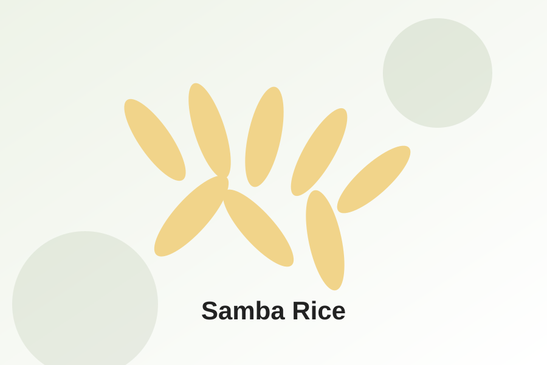
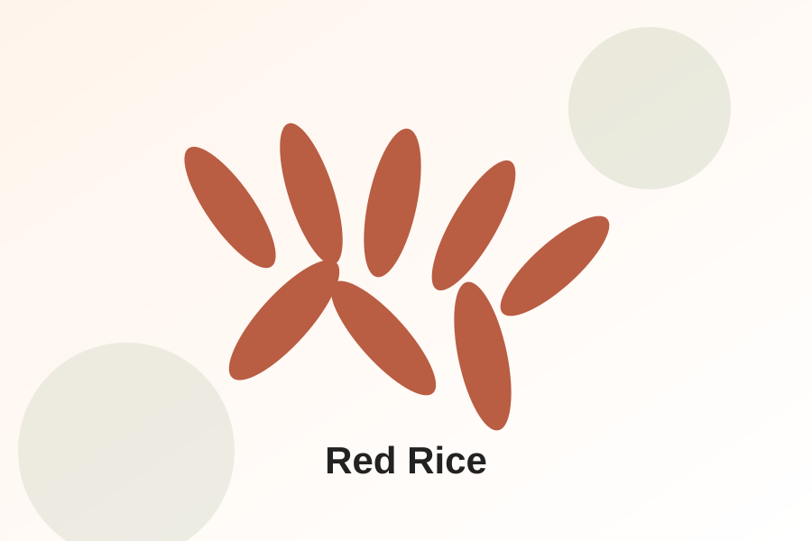
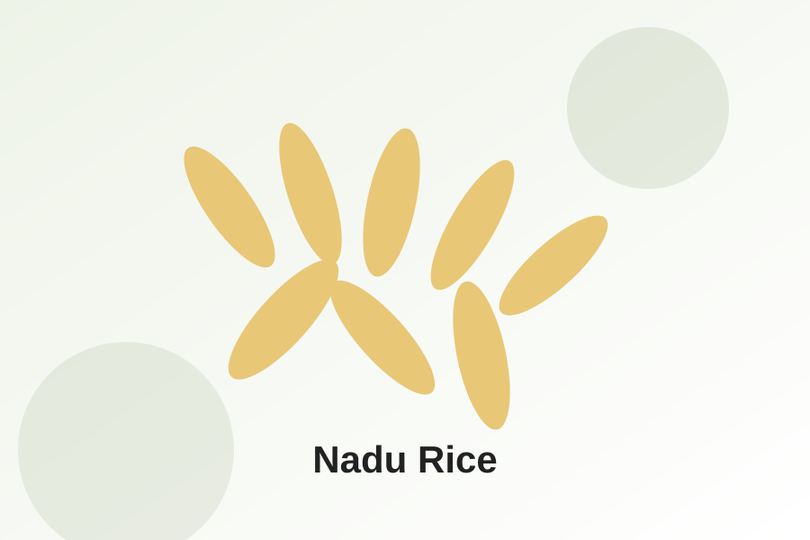

Samba Rice
Popular Sri Lankan rice variety suitable for household, retail, and wholesale markets.
Sri Lankan Rice Export Catalogue
We present selected Sri Lankan Tissamaharama rice varieties for wholesale, retail, distributor, and food-service import inquiries.
Product categories
This first version is a product-display website. Pricing, minimum order quantity, shipping terms, and documentation should be confirmed directly for each buyer.

Popular Sri Lankan rice variety suitable for household, retail, and wholesale markets.

Traditional Sri Lankan red rice for selected buyer and distributor requirements.

Widely consumed rice variety available for retail, food-service, and bulk inquiry.
Export-oriented presentation
Rice export pricing usually depends on quantity, destination country, packaging, logistics, and required documents. This website therefore focuses on professional inquiry generation.
Wholesale and distributor inquiry support
Flexible packaging information
Product catalogue structure ready for FastAPI migration